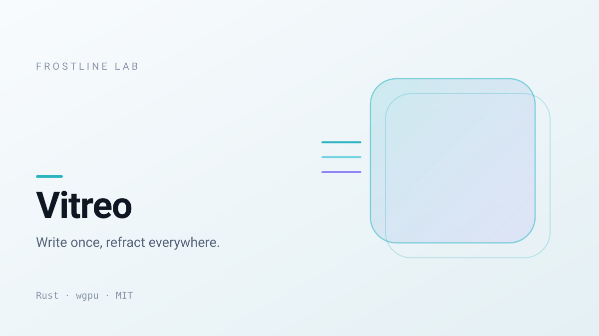
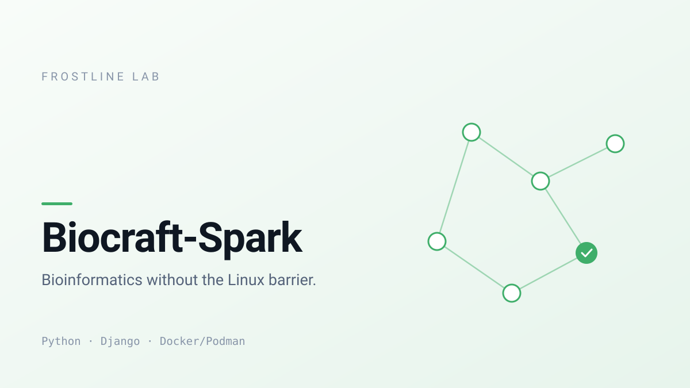
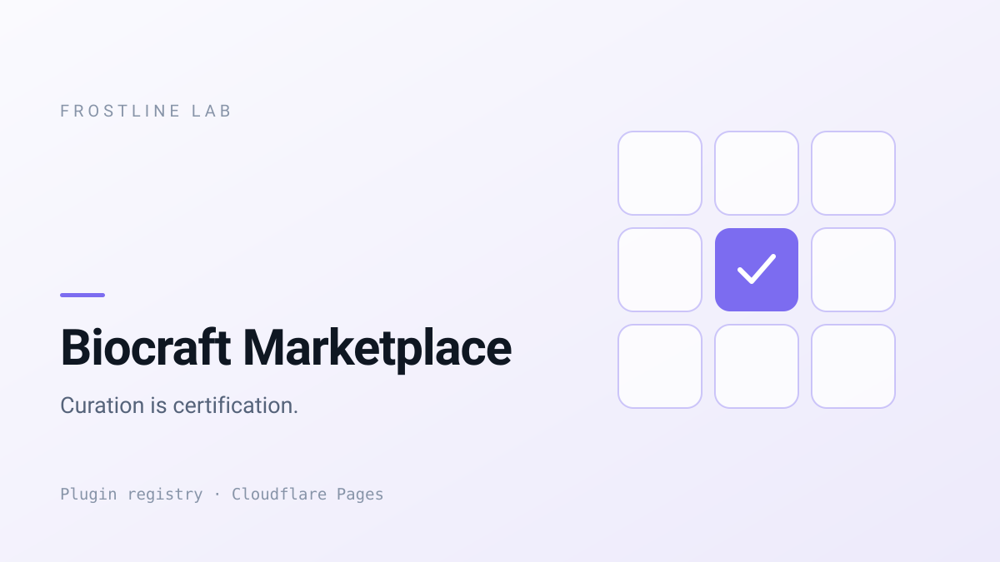
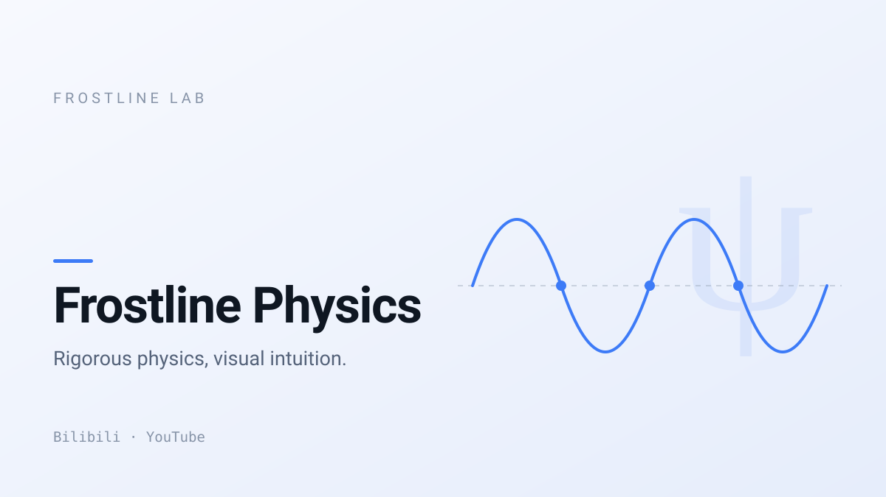

Simulation only: this is tools/embed/org-grid.html rendered with the attribute set
GitHub keeps. The real test is the live organization page.
|

Vitreo |

Biocraft-Spark |
|

Biocraft Marketplace |

Frostline Physics |